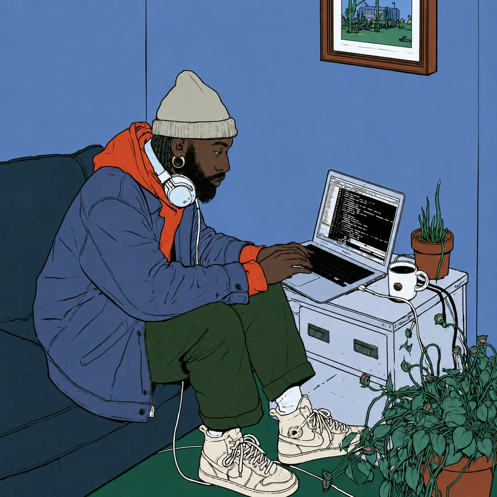
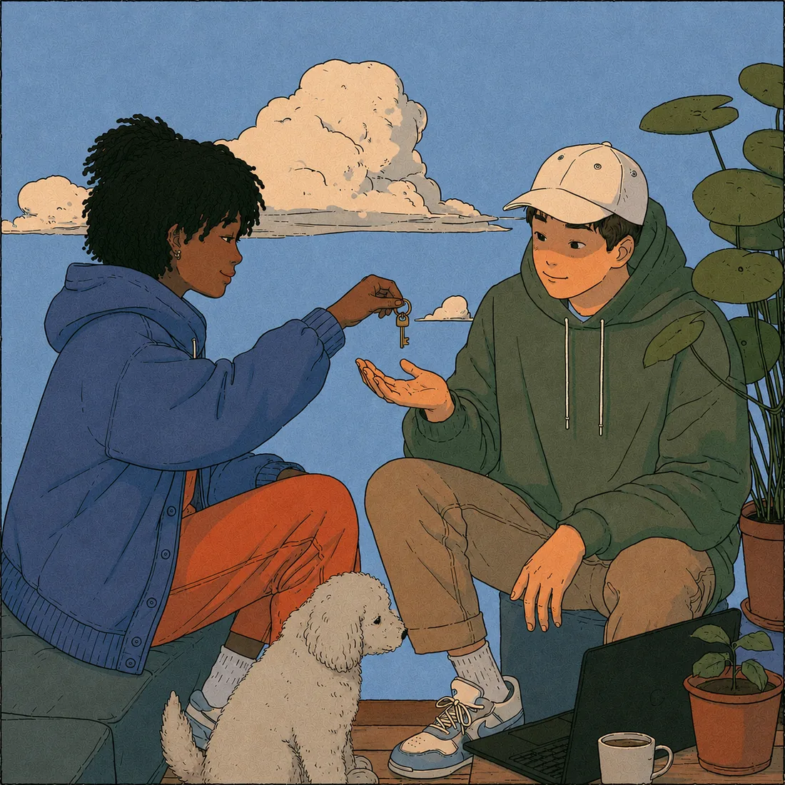
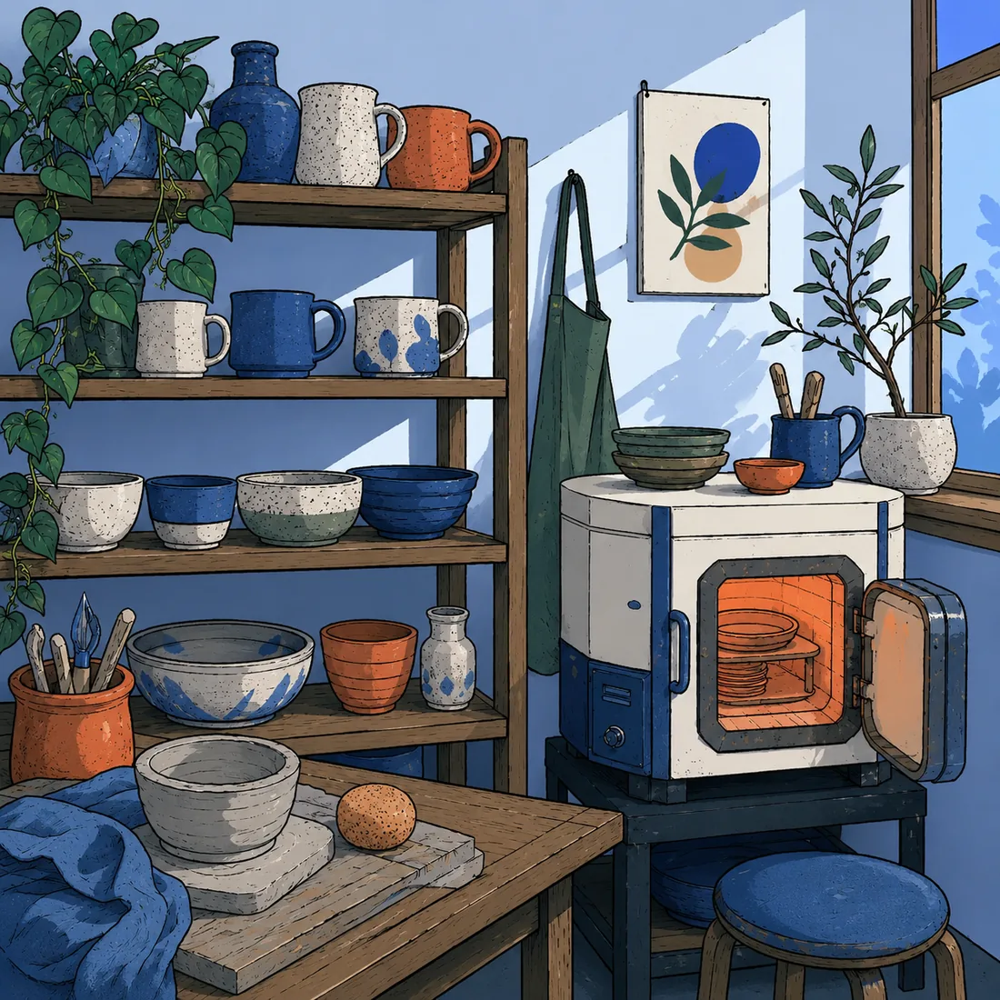

Kiln turns any static site, even one your AI just built, into one your client can edit by clicking it. The code lives in a GitHub repo you keep, or hand to your client to own. Never locked inside Kiln.

One set runs on your page and does the editing. One runs on Cloudflare and handles sign-in and commits. They work against a GitHub repo and the host you choose. No database, no build server.
Run both sets yourself for free, or let Kiln run them for you. See the three plans below.
AI builders ship gorgeous static sites and push them to GitHub. After that, every small edit means re-opening a chat with a robot. Kiln is the missing layer: the people who run the site edit it themselves, right on the page.
Your editors change words and pictures by clicking the page. The layout and design stay exactly as you built them.
Click any text and type. Bold, links, lists, headings, plus your own site styles as the palette, so type stays designed.
Click a photo to swap it, auto-resized. Drop images into articles, attach a PDF to any link. All versioned in Git.
Cards, galleries, document lists: duplicate, drag to reorder, remove. One click, layout untouched.
New post writes the article and its listing card in one atomic commit. No build pipeline, no waiting.
Every publish is a commit. Save drafts, schedule for later, browse a page's timeline, restore any version.
Add, rename, reorder navigation once. Kiln rewrites every page of the site in a single commit.
Add an email and a role. Editors sign in with Google and never touch GitHub.
Lock /members/ pages and PDFs at the edge. Invite people for 1 to 360 days.
Visitors load about 3 KB. The full editor loads only for signed-in editors, at /#kiln.
The one-time setup is yours. For everyone you invite, to edit or to view, there is nothing to install.

You connect a GitHub repo and the worker, about ten minutes with the wizard. The repo can stay yours, or belong to your client. After that, editing happens at yoursite.com/#kiln.
Anyone you invite to change content: your client, their team, or you. Add a Gmail or send a one-time link, they sign in and edit. No GitHub account, nothing to install.
People who only need the gated pages. Invited the same way, they sign in and the members-only pages and files unlock for as long as you set.
The full list: a static site, a free GitHub account, and a free Cloudflare account for the worker. There is no fourth thing.
Or run one command and let the wizard do the clicking with you.
Push your static site to GitHub, then connect a host that auto-deploys on each commit. Cloudflare Pages is recommended, free and commercial-friendly; Vercel or Netlify work too.
One deploy, then open /setup and press a button. It registers your GitHub App and captures the credentials itself. You never copy a secret.
Add data-cms to anything editable and two script tags. Or paste KILN_PROMPT.md into your AI and let it wire the site for you.
npx github:erikkurtu/kilnruns every scriptable step with you, and waits while you click the three platform buttons.Your repo stores the content. Your host serves the files. Kiln connects your clicks to commits. The parts other tools charge for aren't here.
| Edit on the page | Any static HTML | Backend to run | Price | |
|---|---|---|---|---|
| Kiln | Yes | Yes | One small worker | $0, open source |
| WordPress | Partly | No, PHP and themes | Server, DB, patches | $5 to 25+/mo |
| Squarespace, Webflow | Yes | No, their platform | n/a | $16 to 25+/mo |
| CloudCannon | Yes | SSGs only | n/a | $45+/mo |
| Decap, Sveltia | No, a form dashboard | Yes | None, Git | Free |
From do-it-yourself to we-do-everything. The editor and your repo are the same on all three. You just choose how much Kiln runs for you.
Free forever, MIT
$4.99 / mo per site
$19.99 / mo per site
A kiln turns soft clay into something that lasts. Kiln turns a click into a Git commit: plain HTML in a repo you control, with every version kept. Nothing to export later, because nothing was ever locked in.

KILN_PROMPT.md into v0, Lovable, Bolt, or Claude and it wires your existing HTML for click-to-edit. See the AI track.